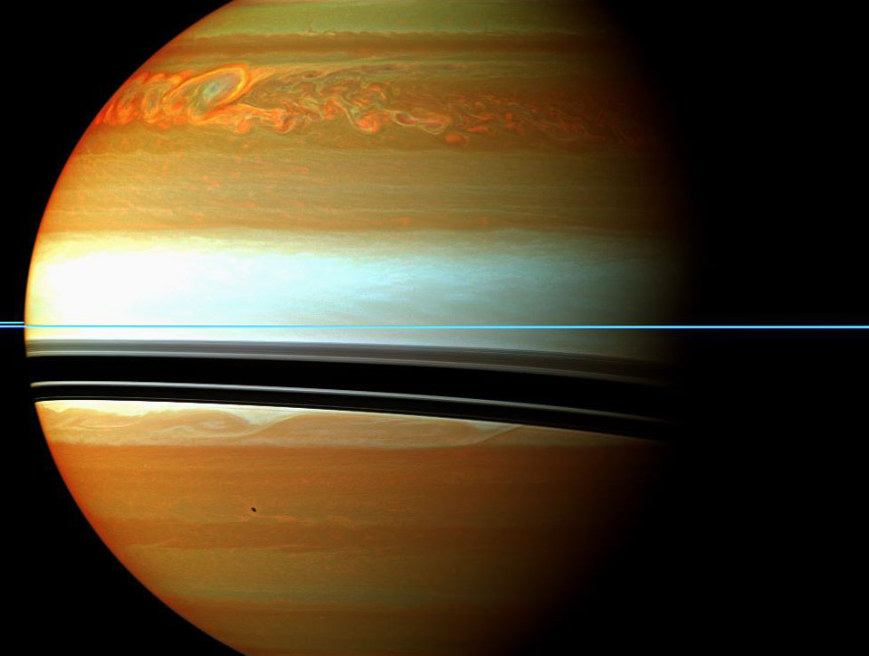

Discover the cosmos! Each day a different image or photograph of our fascinating universe is featured, along with a brief explanation written by a professional astronomer.
2013 April 28

Explanation: It was one of the largest and longest lived storms ever recorded in our Solar System. First seen in late 2010, the above cloud formation in the northern hemisphere of Saturn started larger than the Earth and soon spread completely around the planet. The storm was tracked not only from Earth but from up close by the robotic Cassini spacecraft currently orbiting Saturn. Pictured above in false colored infrared in February, orange colors indicate clouds deep in the atmosphere, while light colors highlight clouds higher up. The rings of Saturn are seen nearly edge-on as the thin blue horizontal line. The warped dark bands are the shadows of the rings cast onto the cloud tops by the Sun to the upper left. A source of radio noise from lightning, the intense storm was thought to relate to seasonal changes when spring emerges in the north of Saturn. After raging for over six months, the iconic storm circled the entire planet and then tried to absorb its own tail -- which surprisingly caused it to fade away.
Authors & editors:
Robert Nemiroff
(MTU) &
Jerry Bonnell (UMCP)
NASA Official: Phillip Newman
Specific rights apply.
NASA Web
Privacy Policy and Important Notices
A service of:
ASD at
NASA /
GSFC
& Michigan Tech. U.
{kind=link}